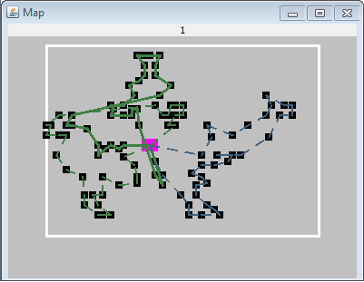

| Darstellungsformen :: Zweidimensionale Darstellung |
|
Jeder Tourenplan kann in der zweidimensionalen Ansicht betrachtet werden. Die Kunden werden als schwarze Kästchen auf der Karte eingezeichnet. Depots sind größere rosa Kästchen und die Touren werden durch gestrichelte Linien dargestellt. Ist eine Tour durch den Lösungs-Browser ausgewählt worden, so wird diese als eine durchgezogen und dickere Linie repräsentiert. Jede Tour erhält eine individuelle Farbe.  Zweidimensionale Darstellung eines Tourenplans Die Karte skaliert mit der größe des Fensters, dementsprechend kann es passieren, dass nah beieinander liegende Kunden in einem kleinen Fenster schlecht voneinander zu unterscheiden sind. |